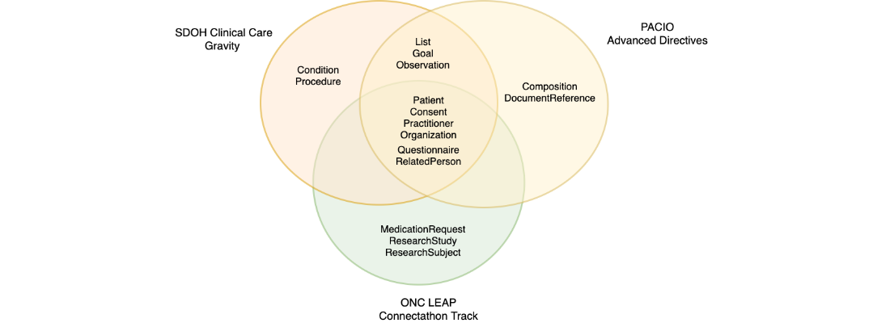
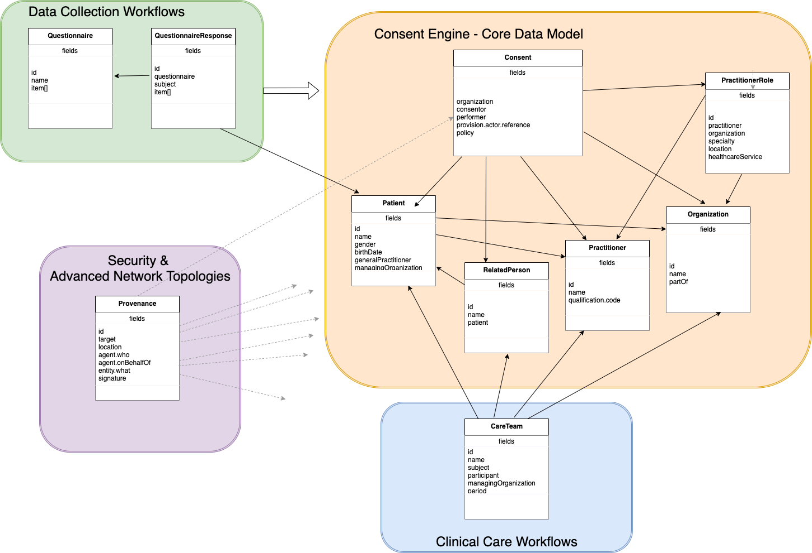

0.3.6 - ci-build
USStateProfiles - Local Development build (v0.3.6). See the Directory of published versions
Modern clinical information systems are regulated by various laws, including (but not limited to) HIPAA, GDPR, and 21st Century Cures. These laws outline expectations for patient privacy and access that clinicians are bound to. In practice, these laws specify a default expectation of privacy, with the patient having the right to grant or deny access to their information to others. When viewed through the lens of computer information systems, these laws detail a combination of data collection forms that need to be implemented and respected, and which inform the access control lists of who may log into which systems, and what information they are allowed to access or modify.
The purpose of this implementation guide is to help developers implement systems that exchange consent and advance directives data to be used in generating access control lists. These systems may range widely from Electronic Medical Records (EHR) running in data warehouses, to Personal Health Records (PHR) running on personal mobile devices, to dedicated Consent Engine services, to graph databases, to blockchains, and many other services or products yet to be imagined.
This implementation guide was developed after performing a meta-analysis of three related implementation guides - SDOH Clinical Care (Gravity), PACIO Advanced Directives, and the LEAP Connectathon Track. For those not familiar with this prior art, the Gravity IG has a particular emphasis on social determinates of health and translating the health conditions/goals of patients into consent records; while the PACIO IG has an emphasis on the advanced directive documents themselves, and the ONC Leap IG has an emphasis on clinician workflows within the hospital and clinical research environments.

The common denominator between these three implementation guides was the Consent, Questionnaire, Patient, Practitioner, RelatedPerson, and Organization resources.
This implementation guide seeks to start with these resources as a base, add learnings from multiple implementations of advanced directives websites in the Node/Javascript and blockchain community, with a focus on security and access control lists.
From these usecases and clinical scenarios, the following data model was extracted.

The core consent engine data model center around the FHIR Consent resource, and the resources pertaining to human and organizational actors (in so far as legal jurisprudice concerns itself with human actors).
Secondary workflows include the structured data capture workflows, in which Questionnaires are used to create forms, which then collect Responses, which are then mapped into Consent records. Additionally, workflow for security and advanced network topologies such as blockchain are provided by inclusion of the FHIR Provenance record.
Finally, exploratory consideration is given to CareTeam resource for use in modeling clinical care workflows; but which creates complex taxonomies requiring recursive parsing algoritms.
Endpoint query patterns vary depending on business usecase and workflow, but are generally organized around the perspective of each of the actors or organizations. Typical queries will be around the patient accessing his or her own consent records; an organization querying which records a practitioner has access to; an organization determining if a specific related person is authorized to access a patient’s records, and so forth. You will want to review the following endpoints and queries, and select the ones most relevant to your use case.
Relationship Modeling
GET /Patient/{patientId}
GET /Patient?_id={patientId}
GET /Patient?organization={managingOrganizationId}
GET /Organization/{organizationId}
GET /Organization?_id={organizationId}
GET /Practitioner/{practitionerId}
GET /Practitioner?_id={practitionerId}
GET /PractitionerRole/{practitionerRoleId}
GET /PractitionerRole?_id={practitionerRoleId}
GET /RelatedPerson/{relatedPersonId}
GET /RelatedPerson?_id={relatedPersonId}
GET /RelatedPerson?patient={patientId}
POST /Consent/{patientId}
GET /Consent/{consentId}
GET /Consent?actor={actorReference}
GET /Consent?consentor={consentorReference}
GET /Consent?subject=Patient/{patientId}
GET /Consent?organization=Organization/{organizationId}
GET /Consent?performer=Practitioner/{practitionerId}
GET /Consent?performer=RelatedPerson/{relatedPersonId}
GET /Consent?performer=PractitionerRole/{practitionerRoleId}
DELETE /Consent/{patientId}
Getting Started with FHIR
FHIR Resource List
HL7 Education and Certification Course List
For project maintenance, please contact:
Abigail Watson awatson@mitre.org
For community help, please post questions on Zulip:
https://chat.fhir.org/
This (software/technical data) was produced under Contract Number 6521MT01-01, and is subject to Federal Acquisition Regulation Clause 52.227-14, Rights in Data-General.
No other use other than that granted to the U. S. Government, or to those acting on behalf of the U. S. Government under that Clause is authorized without the express written permission of The MITRE Corporation.
For further information, please contact The MITRE Corporation, Contracts Management Office, 7515 Colshire Drive, McLean, VA 22102-7539, (703) 983-6000.
© 2022 The MITRE Corporation.